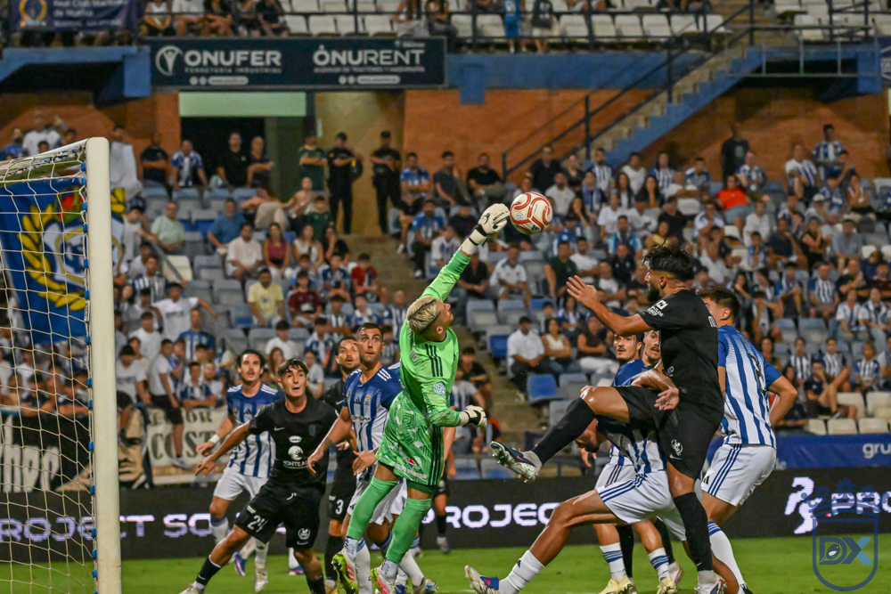
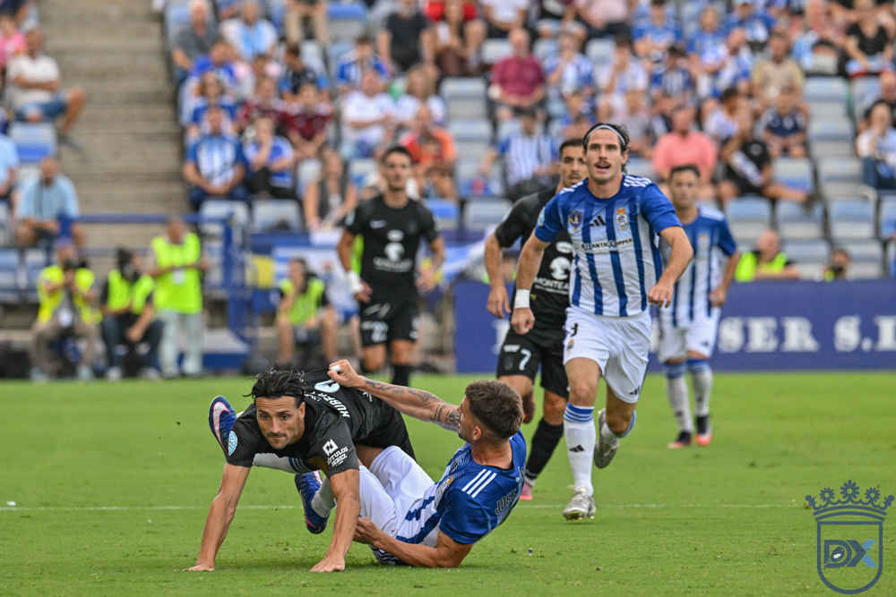
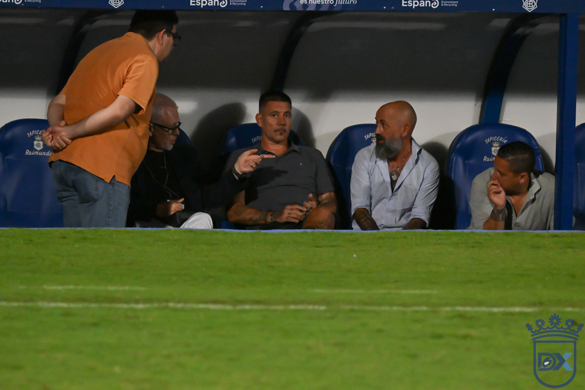

Un Xerez sin personalidad precipita el cese de Molist
Recreativo de Huelva 1 — 0 Xerez CD

Foto: Diario XerecistaUn tempranero gol de Ale Marín certifica una nueva derrota azulina, la última que resiste el consejo de administración antes de fulminar al técnico catalán apenas iniciada la cuarta jornada liguera
El Xerez CD ha comunicado de forma oficial el cese de Xavi Molist como responsable del banquillo azulino. La medida llega tras el tropiezo cosechado en el feudo del Recreativo de Huelva, un correctivo de 1-0 que ha colmado la paciencia de la cúpula directiva y que pone fin a la etapa del preparador catalán después de tan solo cuatro jornadas de competición liguera.
El adiós de Molist se produce en medio de una notable inquietud institucional. Su desembarco el pasado verano venía avalado como una apuesta decidida por un proyecto de calado, apoyada en un perfil de entrenador ofensivo y atractivo con el balón. Sin embargo, los guarismos cosechados durante su gestión han resultado demasiado preocupantes como para que la directiva optara por mantener la paciencia.
Un adiós con sabor amargo
Se acabó la paciencia. Termina el ciclo de Xavi Molist al frente del Xerez CD. El conjunto jerezano cayó por la mínima en su desplazamiento hasta el Nuevo Colombino, en un choque deslucido que decidió Ale Marín apenas iniciado el partido, en el minuto ocho. El equipo continúa sin encontrar su identidad, sin ganar y sin transmitir garantías. La decisión, que llevaba días fraguándose en el seno del consejo de administración —que ya había avisado al técnico durante la semana previa colocándolo en el disparadero—, se hizo definitiva nada más finalizar el encuentro. Dos puntos de doce disputados y una plaza en zona de descenso certificaron el final.
El conjunto azulino dejó una imagen pobre sobre el césped, desaparecido durante buena parte del choque pese a los movimientos en el banquillo, y con escasísima capacidad para inquietar la portería rival frente a un Recreativo que tampoco desplegó su mejor fútbol, pero que le bastó con administrar la ventaja mínima. Al conjunto onubense le sobró con firmar una notable primera mitad y defender con orden en la segunda.
Tres novedades en el once, con Fali como pivote
Con su continuidad ya en el aire, Xavi Molist introdujo tres variantes respecto al equipo que empató sin goles ante el Don Benito la pasada jornada, tanto en la sala de máquinas como en la delantera. Los tres futbolistas con pasado reciente en el Decano, Manu Galán, Zelu y Rubén Mesa, formaron parte del once inicial.
Carlos Pantoja repitió bajo palos, manteniéndose intacta la zaga: Guille Campos y Chacartegui como laterales, con Manu Galán y Moi en el eje central. La gran sorpresa llegó en el centro del campo, con la inclusión del veterano Fali como medio de contención en detrimento del joven Raúl López, habitual en las anteriores citas ligueras. Isuskiza continuó en la medular, flanqueado por Zequi y dos caras nuevas, Julito y Zelu. Arriba, como siempre, la referencia recayó en Rubén Mesa.
Un inicio adverso para los intereses jerezanos
Con un ambiente de gran categoría en las gradas onubenses, el partido comenzó con intensidad y respeto mutuo entre ambos conjuntos. Hasta el quinto minuto, el Decano no inquietó, con una acción de Paolo que colocó el esférico dentro del área sin que Leandro lograra rematar con claridad, en una acción que Fali resolvió con solvencia.
El conjunto local, sin embargo, no necesitó mucho más para adelantarse. Aquel primer aviso le dio confianza, y Ale Marín aprovechó una serie de desajustes en la zaga visitante para hacerse con el balón y batir a Pantoja. Corría el minuto ocho y las cosas se ponían cuesta arriba para un Xerez CD que llegaba a este compromiso con la soga al cuello.
El conjunto azulino sufría de lo lindo y Carlos Pantoja tuvo que emplearse a fondo para evitar el segundo, en el minuto catorce, desviando un potente disparo de Ale Marín, el futbolista más incisivo del encuentro, tras una buena jugada de Pol Prats.
Reacción azulina sin premio
La presión del conjunto onubense resultaba asfixiante, con una grada volcada que protestaba cada acción y reclamó en un par de ocasiones sendas manos en el área rival. A los futbolistas jerezanos les faltaba tiempo de reacción en cada intervención, aunque poco a poco el equipo fue asentándose sobre el terreno de juego.
Fali se erigía en referencia anímica desde el centro del campo, animando a sus compañeros a no venirse abajo. En el minuto veintiséis, Zelu forzó el primer córner azulino, aunque el balón parado no sería el arma decisiva en la tarde onubense. Tres minutos más tarde, el extremo volvió a obligar a la zaga local a despejar a saque de esquina.

Foto: Diario XerecistaLos xerecistas ganaban terreno y, de nuevo a balón parado, generaron ocasiones. Un rifirrafe entre Rubén Mesa y Bonaque se saldó con sendas amonestaciones y un nuevo saque de esquina, que Zequi Díaz lanzó sin fortuna, aunque el posterior rechace lo aprovechó Chacartegui con un disparo que se marchó rozando el poste.
Otra intervención decisiva de Pantoja
El guion del partido se invirtió parcialmente. El Recreativo dejó de dominar, pero Ale Marín seguía apareciendo desde la nada, y en el minuto cuarenta y uno sacó un latigazo perfecto desde la frontal que Pantoja repelió con una intervención sobresaliente, evitando el segundo tanto local.
Tras el susto, Julito lo probó en solitario, topándose con la resistencia de José Carlos. El siguiente saque de esquina sí sembró dudas en la retaguardia onubense, obligando tanto a la defensa como al portero local a emplearse a fondo para evitar el empate.
Doble cambio en el descanso sin fruto
Consciente de que su equipo precisaba un revulsivo, Molist dejó en el vestuario a Isuskiza y Rubén Mesa, dando entrada a Isma en el centro del campo y a Chuma en punta. El Deportivo avisó nada más reanudarse el juego, con un remate acrobático de Isma que se marchó rozando el poste, mientras los visitantes reclamaban sin éxito un posible penalti (46').
La respuesta local la evitó Fali, despejando a córner un taconazo de Paolo destinado a Leandro. En el minuto cincuenta y cuatro, Zequi probó fortuna con un disparo cruzado. El conjunto jerezano ganaba metros mientras el Recreativo se desdibujaba por completo, mostrando síntomas evidentes de desconexión.
El Xerez CD tomaba el control del juego ante un rival apagado, aunque le costaba sobremanera generar ocasiones claras. En el minuto sesenta y tres, Pantoja volvió a salvar a los suyos, esta vez negándole el gol a Vela. El técnico local, Galván, aprovechó ese momento para refrescar su equipo con un doble cambio.
Movimientos sin recompensa
Molist replicó los movimientos de su homólogo con dos sustituciones propias, retirando a Guille Campos y Zelu para dar entrada a un debutante, Víctor López, y a Jaime Fernández. El conjunto azulino, ya sin Fali sobre el terreno y con Raúl López ejerciendo de pivote, insistía sin encontrar premio, mientras el Decano dispuso de una ocasión en una falta botada por Samu Cortés que Nacho Ruiz remató de cabeza fuera (74').
El conjunto local, pese a mantener la ventaja, no las tenía todas consigo, y Galván apuró sus cambios con refuerzos ofensivos. El Xerez CD se aferraba al partido, y una falta sobre Jaime Fernández estuvo cerca de generar peligro, aunque Jero Lario resolvió con una gran estirada.

Foto: Diario XerecistaEl reloj corría en contra de los intereses jerezanos y los nervios afloraban en ambos bandos. El Recreativo no lograba certificar el triunfo, y el Xerez CD, pese a intentarlo, se mostraba incapaz de generar la inspiración necesaria en los metros finales, reñido tanto con el gol como con el acierto en las decisiones clave. El colegiado añadió cuatro minutos de descuento, en los que los azulinos buscaron a la desesperada un empate que nunca llegó a vislumbrarse con claridad.
La grada onubense pedía que el árbitro pusiera fin al encuentro, mientras Bonaque se complicaba innecesariamente la vida en una acción que estuvo a punto de generar tensión entre ambos banquillos. No hubo tiempo para más, y tampoco el Xerez CD ofreció, ni de lejos, la imagen de reacción que se esperaba tras la crisis de resultados. El punto de inflexión no llegó, y las consecuencias no tardaron en materializarse.
Ficha técnica
Recreativo de Huelva: Jero Lario, Néstor Senra, Bonaque, José Carlos, Nacho Ruiz, Alberto Vela (Roan Riera, 84'), Álex Bernal, Pol Prats (Samu Cortés, 64'), Ale Marín (Hugo López, 75'), Paolo (Segura, 76') y Leandro (Agus Alonso, 64').
Xerez CD: Pantoja, Guille Campos (Víctor López, 67'), Moi, Manu Galán, Chacartegui, Fali (Raúl López, 72'), Isuskiza (Isma, 46'), Zelu (Jaime Fernández, 67'), Zequi Díaz, Julito y Rubén Mesa (Chuma, 46').
Árbitro: Sebastián Roberto Pricopi Gogu (Comité castellano-manchego). Amonestó a Bonaque, Ale Marín, Alberto Vela, Guille Campos, Rubén Mesa y Raúl López.
Gol: 1-0 (8') Ale Marín.
Incidencias: Encuentro correspondiente a la cuarta jornada del Grupo 4 de Segunda RFEF disputado en el Nuevo Colombino, con cerca de 700 seguidores xerecistas desplazados hasta las gradas onubenses.
🇬🇧 Read in English ← Volver a la portada